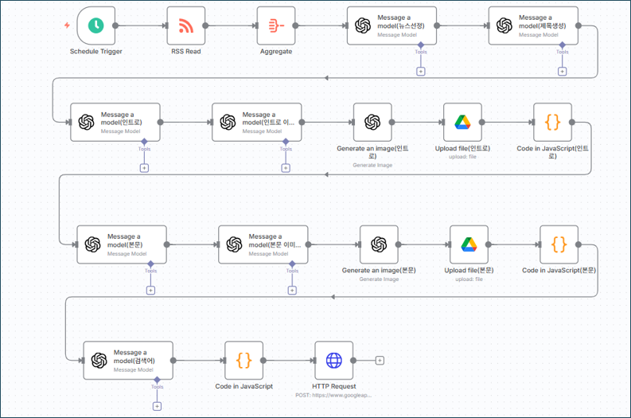
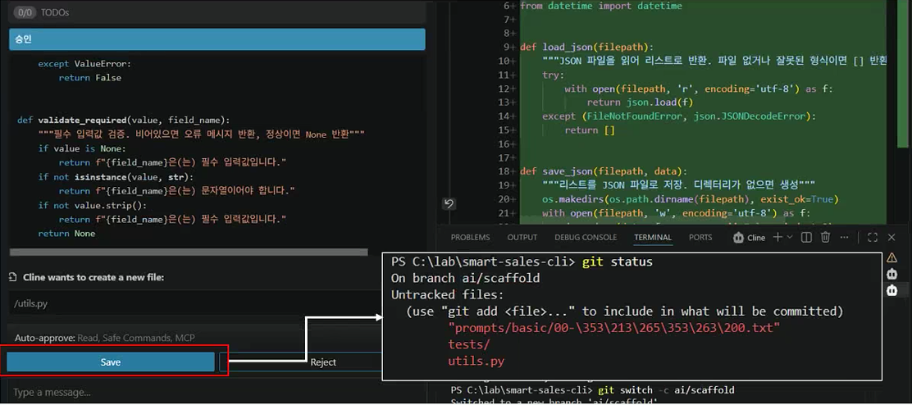
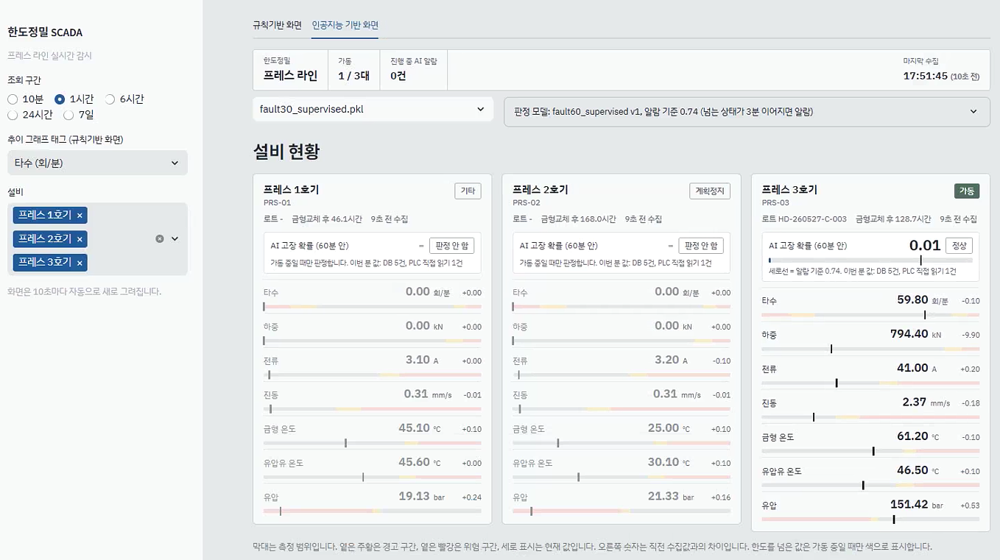
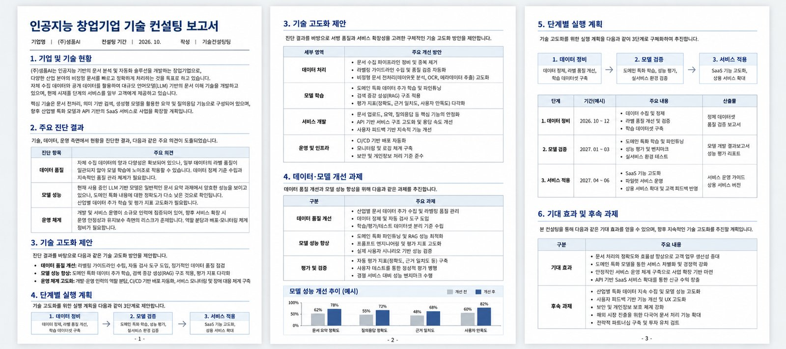

기업 맞춤 AI 교육
임직원이 자기 업무 데이터로 실습하는 교육입니다. 대상과 수준에 맞춰 과정을 구성합니다.
이런 일을 합니다
- 임직원 AI 역량 교육 (비개발자 · 개발자)
- 기관 맞춤 과정 설계와 사내 데이터 실습
- 교육 영상 · 교안 제작
결과
수강생별 업무 결과물, AI 결과 검증 방법
AI 교육 · AI 도입 컨설팅 · AI 보안
아인폴랩은 기업, 공공기관, 대학을 대상으로 실습 중심의 AI 교육과 AI 도입 컨설팅을 합니다. AI를 업무에 쓸 때 필요한 보안 교육도 제공합니다.
주요 고객 분야
20곳+
교육, 강연, 컨설팅을 진행한 기관
2025~2026년
12개
운영 중인 교육 과정
2027년도 교육과정
3개
AI 교육, AI 도입 컨설팅, AI 보안
사업 분야
2시간~5일
기관 일정에 맞춰 편성하는 교육 시간
대면 · 실시간 온라인
AI 교육이나 도입을 준비하는 기업에서 자주 받는 질문입니다.
개념 설명과 시연 중심의 교육은 수강생 업무에 적용해 보는 실습이 부족합니다.
오류 메시지 없이 계산이 틀리는 경우가 있지만, 확인 방법을 배울 기회가 적습니다.
효과가 큰 업무와 위험이 큰 업무를 나누는 기준이 없습니다.
사내 문서 유출, AI가 만든 코드의 취약점 같은 위험을 미리 점검해야 합니다.
사업 분야
임직원이 자기 업무 데이터로 실습하는 교육입니다. 대상과 수준에 맞춰 과정을 구성합니다.
이런 일을 합니다
결과
수강생별 업무 결과물, AI 결과 검증 방법
AI 적용 업무 선정, 기술 고도화 자문, 사내 훈련과정 설계를 지원합니다.
이런 일을 합니다
결과
AI 도입 과제 목록과 실행 계획
AI를 도입할 때 생기는 보안 위험을 점검하고, 시큐어코딩 교육을 합니다. 네이버 버그바운티 2위(2019), 해킹 · 리버싱 분야 저서 2권.
이런 일을 합니다
결과
AI 도입 전 보안 점검 기준
교육 과정
과정별 단독 편성과 연계 편성이 가능합니다.
고객 사례

수강생 결과물노코드 인공지능(Dify) 과정, 실습 중심 대면 교육

수강생 결과물Git으로 제어하는 Agent 기반 코딩 과정

수강생 결과물AX 특화 공동훈련센터 핵심기업 컨설팅, 바이브코딩 제조 데이터분석 교육

보고서 예시 (가상 기업)창업기업 대상 AI 연구개발 방향과 기술 고도화 자문
문의부터 교육 후 지원까지 4단계로 진행합니다.
교육 대상, 인원, 일정, 요구 사항을 확인하고 과정을 제안합니다.
온라인 또는 전화 30분강의계획서와 견적을 드리고, 필요하면 실습 자료를 사내 데이터로 바꿉니다.
실습 환경은 개강 3주 전 확정1인 1PC 실습으로 진행하며, AI 결과 검증 실습을 포함합니다.
특강 2시간 ~ 5일 과정교육 자료와 점검표를 제공하고, 현업 적용 관련 질문에 답변합니다.
교육 후 1개월회사 소개
미션
기업이 AI를 실제 업무에 활용하도록 돕습니다.
일하는 원칙
기준은 사람이 정하고, AI 결과는 검증한 뒤 사용합니다.
강점
교육, 도입 컨설팅, 보안 교육을 함께 제공합니다.
회사 개요
| 회사명 | 아인폴랩 (einfollab) |
|---|---|
| 설립 | 2026년 1월 |
| 주요 고객 | 기업 · 공공기관 · 대학 · 기업교육 전문기관 |
| 교육 방식 | 대면 집합교육 · 실시간 온라인, 1인 1PC 실습 |
| 연구 조직 | AI연구소 (교육 콘텐츠, AI 결과 검증 방법 연구) |
연혁
대표
조성문대표 · AI연구소장
AI연구소
AI 결과를 원본과 대조하는 점검 4종과 확인 카드 6장을 개발해 모든 과정에 적용합니다.
사례 데이터, 실습 노트북, 교안을 직접 제작하고, 기관 요청 시 사내 데이터용으로 수정합니다.
노코드 AI, 강화학습, 보안 분야 저서 6권과 연구 논문 2편(딥페이크 탐지, 브라우저 퍼징)을 발표했습니다.
저서 · 논문 보기 →2시간 특강, 하루(8시간) 과정, 3~5일 과정이 있습니다. 교육 시간은 기관 일정과 교육 목표에 맞춰 조정합니다.
대면 집합교육이 기본이고, 실시간 온라인 교육도 가능합니다. 수강생 1인 1PC와 인터넷 연결이 필요합니다.
가능합니다. 개인정보와 기밀을 뺀 비식별 사내 데이터로 실습 자료를 바꿔 드립니다. 원하지 않으면 공개 데이터로 진행합니다.
대부분 과정은 코딩 경험 없이 들을 수 있습니다. 개발자 대상 과정(AI Agent SDD)만 파이썬 기초 문법을 읽을 수 있으면 됩니다.
강사 1명 기준 30명, 조교가 있으면 50명까지 진행합니다. AI Agent SDD 과정은 조별 리뷰가 있어 20명(조교 포함 30명)입니다.
교육 시간, 인원, 실습 자료를 사내 데이터로 바꾸는지에 따라 정해집니다. 문의 주시면 강의계획서와 함께 견적을 보내 드립니다.
아인폴랩은 일반과세 사업자로, 교육 · 컨설팅 비용에 대해 전자세금계산서를 발행합니다.